伊莱 (上海虹口) 学校（始于2017年）
了解更多学校详情，请点击网址访问：https://www.elanschool.cn/lxwm.htm
查看详情>>
基本情况
武汉三牛中美中学创办于2016年，隶属于龙图教育教育集团，系华中地区第一所美式私立寄宿中学，提供7至12年级完全中学学历教育。学校采用先进的教育理念、高效的教学措施、创新育人模式，为学生提供中美课程融合，东西方文化对比，双语课堂与社团体验的国际教育，致力于培养学生德智体全面发展，让学生成长为具有国际视野，世界公民素养的未来精英。
2018年，三牛被美国U.S.News授牌“认证中学”，成为湖北省首家获得该荣誉的国际学校；在中国国际教育第三方独立评估机构「宜校」发布的2019年度《华中城市最强中学榜》中，三牛位列华中排名第二；2020年，三牛新晋跻身胡润百学全国百强学校，是武汉市唯三入选的国际学校。
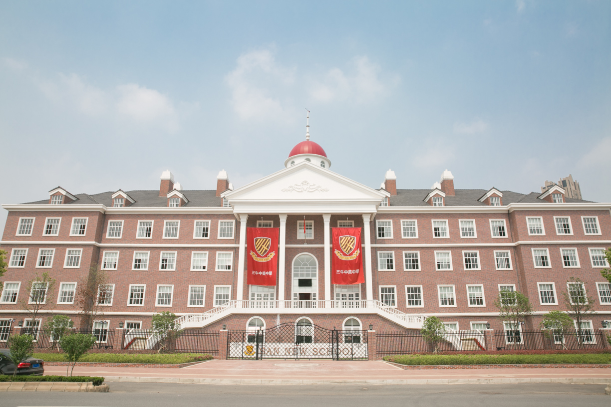
教育理念
武汉三牛中美中学6C教育理念：
1. 批判和创造性思维能力 Critical & Creative Thinking
批判性思维是未来核心素养的基础。我们在所有课程、活动和社团过程中，鼓励学生独立思考，客观分析，基于特定问题提出自己的观点和主张，给予更具创造力的解决问题方法。
2. 解决复杂问题的能力 Complex Problem Solving Ability
我们为学生提供丰富的实践机会，带领学生运用知识、技能和独特的观点，锻炼他们的分析问题能力、解决问题能力以及灵活应变能力，把学生培养成能迎接未来挑战的人才。
3. 沟通与社交能力 (Public) Communication
自信、口才、写作、礼仪、沟通和协调是我们培养学生社交能力的重点，我们在课堂内外创造各类需要团队协作以及公共演讲的活动平台，鼓励学生学习、锻炼和发展人际沟通技能。
4. 终身学习 Continuous/Lifelong Learning
我们顺应人才成长规律，给予学生充分的空间释放好奇心，给予学生高度的自主权选择兴趣领域，重视培养他们的自我管理能力和终身学习能力，持续不断自我更新，和未来同步发展。
5. 文化理解 Culture Awareness
全球化趋势下，我们通过双语教学和中西教育融合，打破传统学校知识维度，提升学生眼界与见识，帮助学生建立多元知识体系，尊重和理解各国文化差异，找到个人与世界的交集。
6. 社区精神 Community Spirit
我们支持学生参与或发起全球范围内的各类公益爱心活动，培养他们的社会责任感和大爱精神，鼓励他们自己幸福生活的同时也能回馈社会，为他人谋取福利。
培养目标
初中7—9年级
从英语学习、特长培养、习惯培养等各方面入手，在开放的校园环境下，通过渐进式、沉浸式中英双语教学，以及形式多样的社团文化活动和学术探索机会，帮助学生打好学术基础，挖掘学生未知潜力，培养学生多元文化理解力、解决复杂问题的能力，以及批判、创造性思维，为应对未来高中和大学学业挑战做好充分准备。
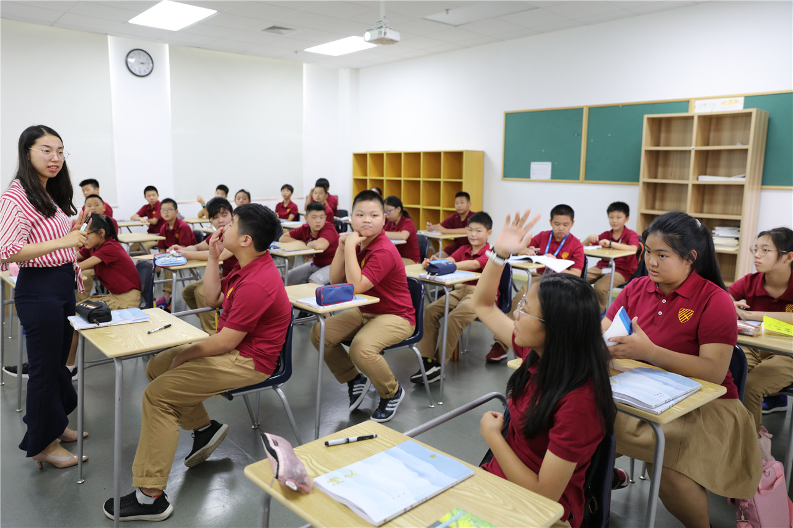
高中10—12年级
旨在帮助学生打好坚实的文化基础，从多方面培养学生的学习能力和在国外大学就读的适应能力。通过三年的学习，学生具有扎实的数理化基础，较强的英语听说读写能力，既能成功地被国外一流大学录取，又具备顺利完成大学本科及以上学业从而获得相应学历的能力。
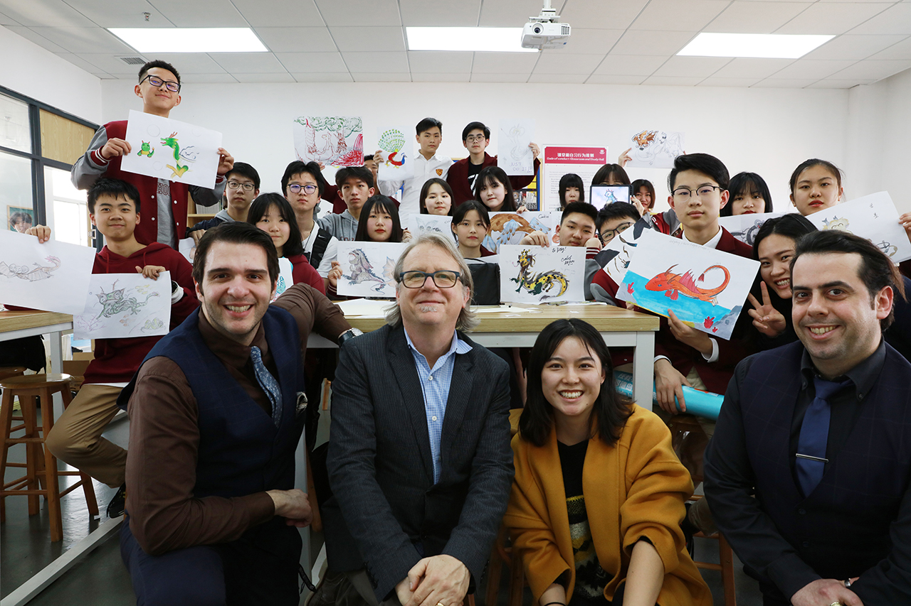
学校特色
选课走班制：学生根据兴趣和能力选择相应的课程，每节课去到不同教室上课。
小班化教学：每班人数不超过25人，学校师生比达1:6。
学业老师：三牛为每位学生配备专职学业老师指导学生学业及校园生活。
丰富社团：设立40+社团数量，每天60分钟社团时间，挖掘学生特长，丰富校园生活。
国际交流：与美国多所优质中学、海外名校、Education USA等机构合作，为师生带来丰富的教育文化交流平台。
全球竞赛：为学生提供极具背景提升优势的国际学科竞赛平台，学生在多项竞赛中成绩优异。
校园活动：鼓励学生自主策划活动，大力发挥学生团队精神、创新精神和领导力。
海外游学：三牛提供丰富的全球游学机会，为学生打下多元文化基础。
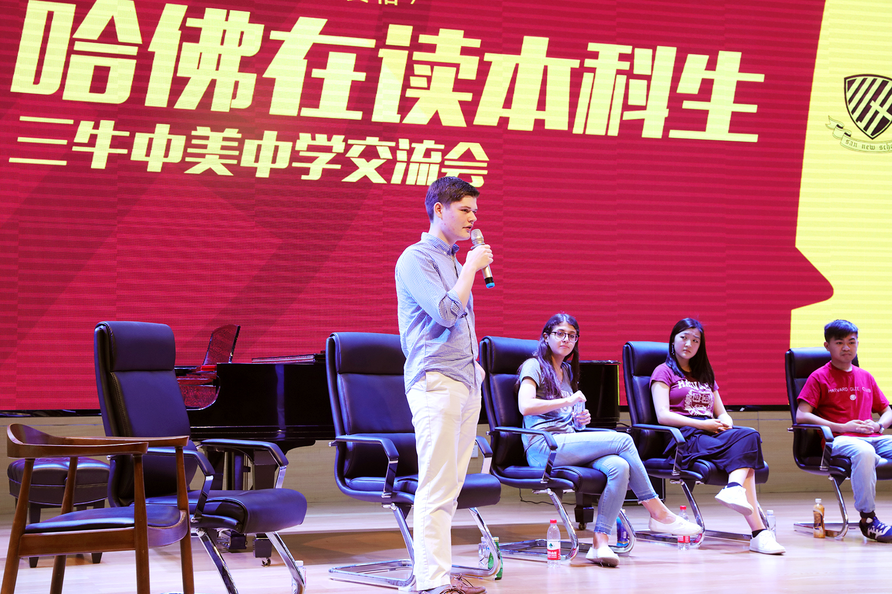
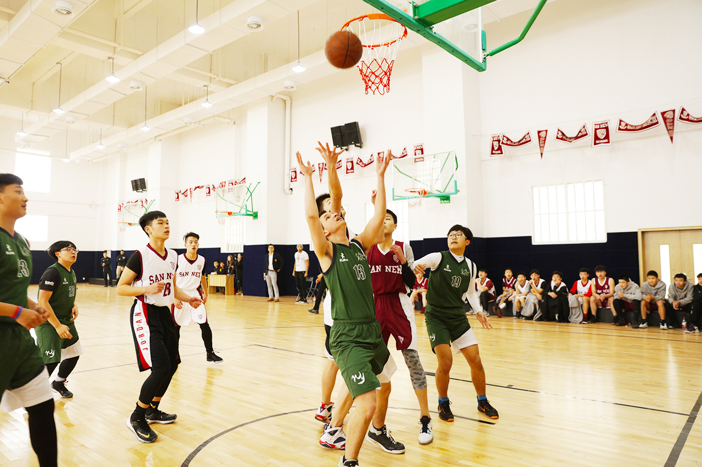
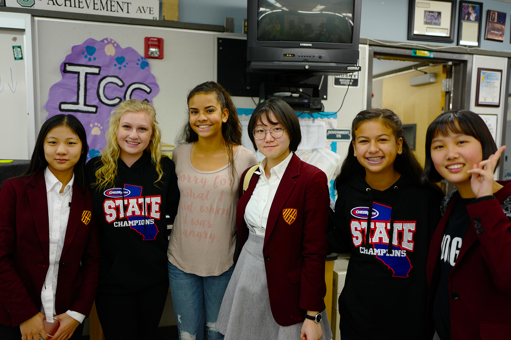
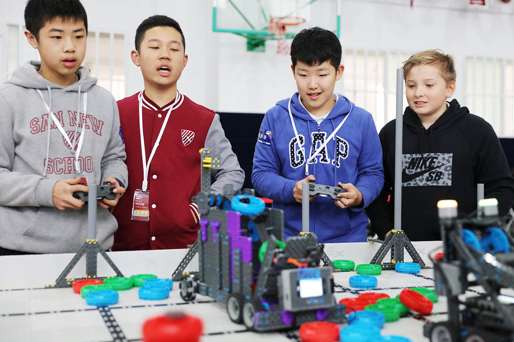
教学特色
初中特色
双语授课：除中方课程外，学生可根据自身情况，选择双语或全英文课程。
双语教材：除义务教育指定教材外，学生使用美国原版教材，中西过渡，夯实基础。
成长档案：动态记录每位学生在校期间的学习与生活，充分体现学生个性差异。
国学教育：开设经典文学、四书五经等课程，培养学生成为最懂中国文化的世界公民。
素质教育：建立鼓励学生生活自理、行为自律、学习自主、活动自治的评价机制，推动校风建设。
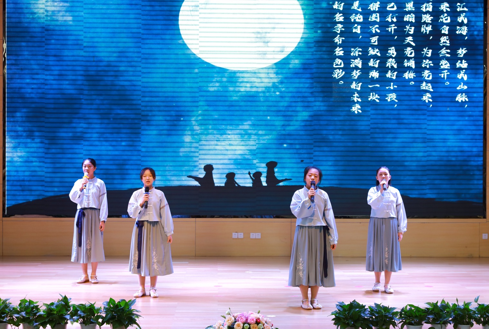
高中特色
英语授课：学期开始，英语授课不少于80%。随着学生英语水平的提高，逐步实施全英语教学。
AP课程：提供18门美国AP课程（华中地区之最，课程获美国大学理事会认证），助力学生升名校。
导师计划：为具备优秀学术能力、超凡领导才能以及优良品格的学生创建“导师计划”，赋予更多优秀学生特权。
标化冲刺：向学生提供专业、高效的托福及赛达培训课程，提高学生英语综合能力，帮助学生在校内取得考试高分。
升学服务：为每位学生配备1vs1升学指导服务，进行个性化学业规划，确保毕业进入海外理想大学。
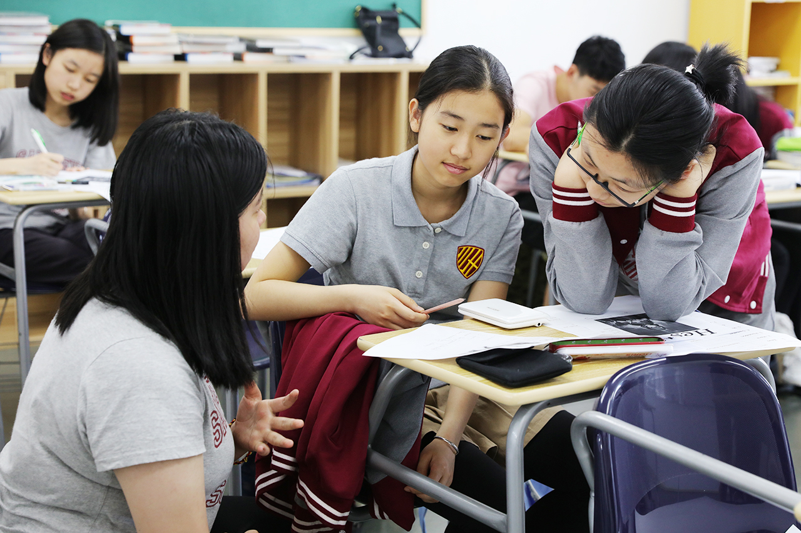
课程体系
初中课程体系
英语：英语文学、学术英语-读写、学术英语-听说、托福基础
数学和科学（初中数学、代数Ⅰ、Go Math、初中生物、生态环境学、人体学、Scratch、Office、Photoshop、Premiere、物理、化学）
社会科学（道德与法治、生活与哲学、部编语文、校本语文、国学、历史、地理、心理学）
ARTS AND SPORTS 艺术和体育（音乐欣赏、视唱练耳、音乐理论、戏剧、篮球、排球、足球、羽毛球、高尔夫、舞蹈、瑜伽、书法、水彩、艺术欣赏）
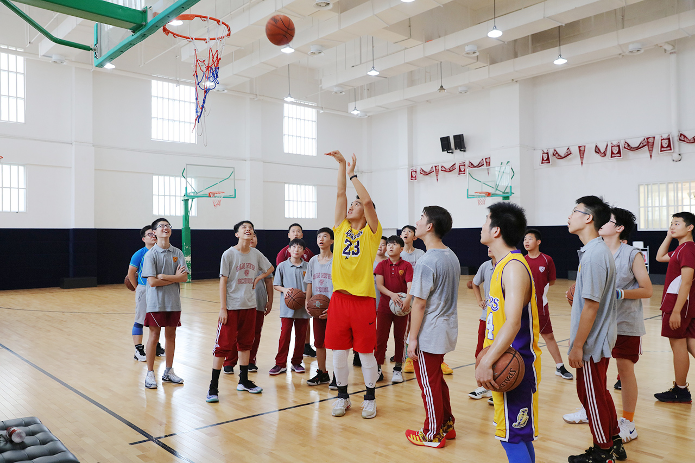
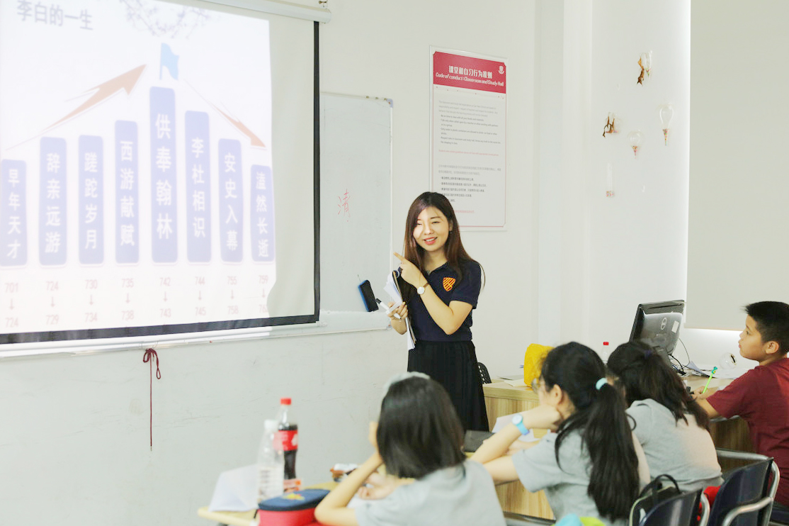
高中课程体系
核心课程：英语、数学、自然科学、社科与历史、语言、体育
AP课程：英语文学、微积分AB/BC、统计学、微观/宏观经济学、美国历史、物理1/2/C、化学、生物、计算机、心理学
选修课程：科学工程、人文社科、经济商科、艺术设计
考训课程：托福、赛达
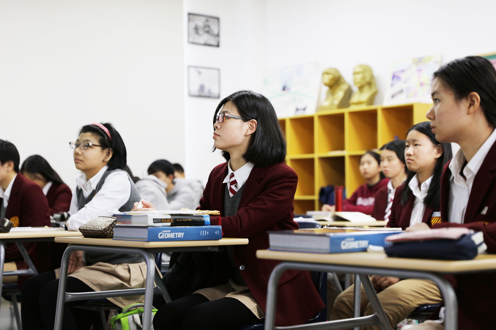
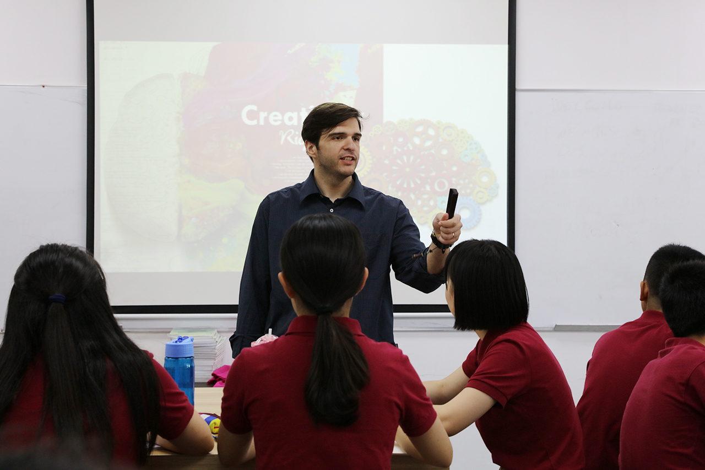
设备设施
武汉三牛中美中学总投资3亿元人民币，校园规模达36000㎡。24人小班制教室、中央空调、PM2.5新风过滤系统、走廊静音地垫、中央绿色草坪、实验室、健身房、瑜伽室、壁球馆、篮球馆、足球场、图书馆、壁球馆、计算机教室、大礼堂、高尔夫球场……一站式满足孩子学习和兴趣发展的硬件资源一应俱全。
学校课桌椅均从美国原装进口，与美国顶尖私立中学安多弗学校（Phillips Andover Academy）同步。根据不同科目及授课需求，课桌椅可被摆成不同形状。
学校健身房配置跑步机、椭圆机、动感单车等各类健身器材；室内篮球馆采用全实木地板，达到举办国际级比赛的标准。
学校斥资百万元购置施坦威D-274三角钢琴，供学生舞台演出使用。这是继琴台音乐厅和武汉音乐学院之后，武汉市引进的第三台，同时也是进入中学校园的第一台。
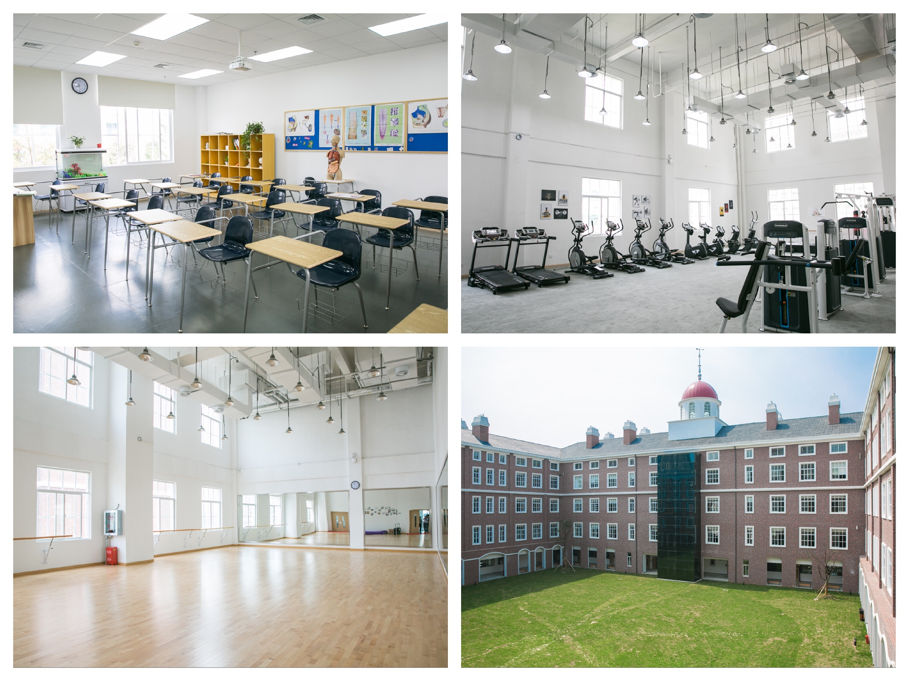
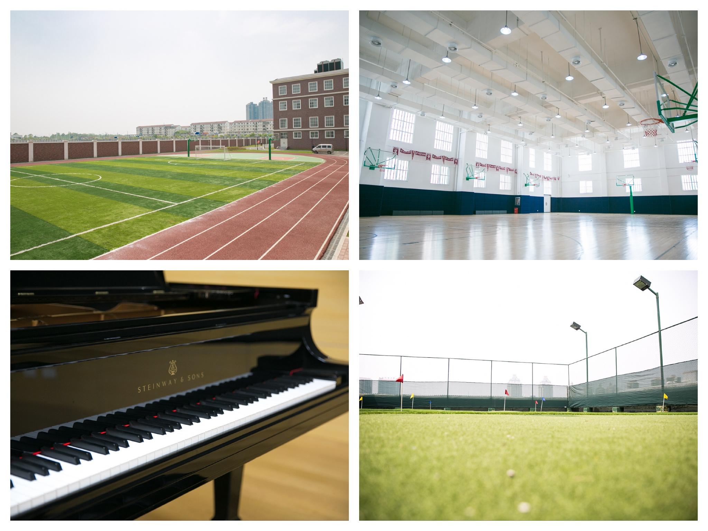
师资力量
武雄厚的师资是保证教学质量的根本，学校90%教师具有硕士及以上学历，30%教师来自美英等国家，30%为具有海外留学背景的双语教师，30%是具有英语授课能力的中教老师。
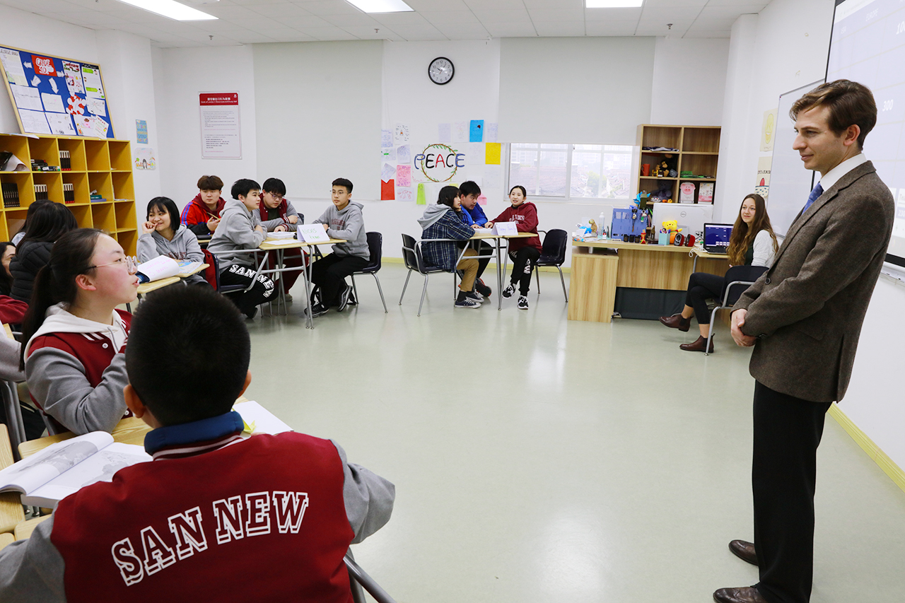
办学成果
学校注重教育过程，关注学生成长。在学业老师、教学老师、升学老师的引导和陪伴下，“普娃”变“牛娃”的故事俯首即拾，许多入校成绩普通的孩子从这里走向世界名校。
创校四年，毕业生全部进入海外大学，历届学生就读大学包括：美国加州大学洛杉矶分校、美国南加州大学、美国芝加哥艺术学院、美国史密斯学院、加拿大麦吉尔大学、英属哥伦比亚大学、英国伦敦艺术大学、澳洲墨尔本大学等。
截至到2020年6月，学校应届毕业生共收到来自美国、英国、加拿大、澳洲、意大利、瑞士、香港等全球368份offer，全球TOP100名校（及同等级别名校）录取率高达94%。录取学校包括加拿大TOP1多伦多大学、美国TOP6芝加哥大学、美国TOP15范德堡大学、美国TOP29纽约大学、全球TOP27曼切斯特大学、全球TOP42悉尼大学、艺术TOP3罗德岛设计学院等。
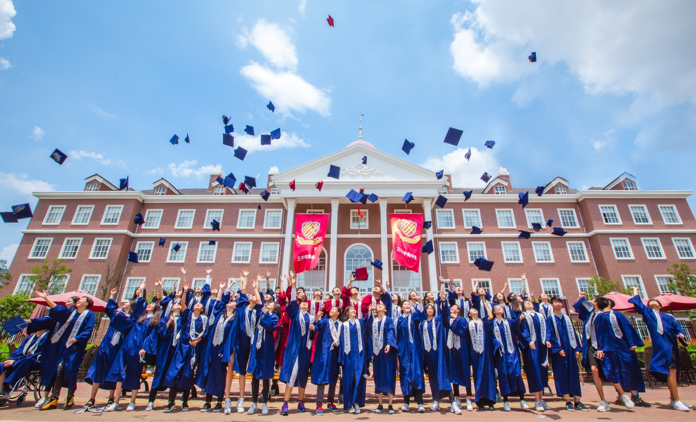
报名咨询
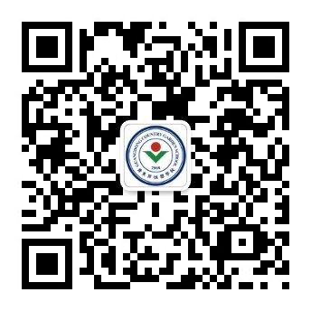
官网：http://www.sannewschool.com
地址：湖北省武汉市经济开发区太子湖北路特一号
电话：027-84853636
制造创新工业
 分享：
分享：